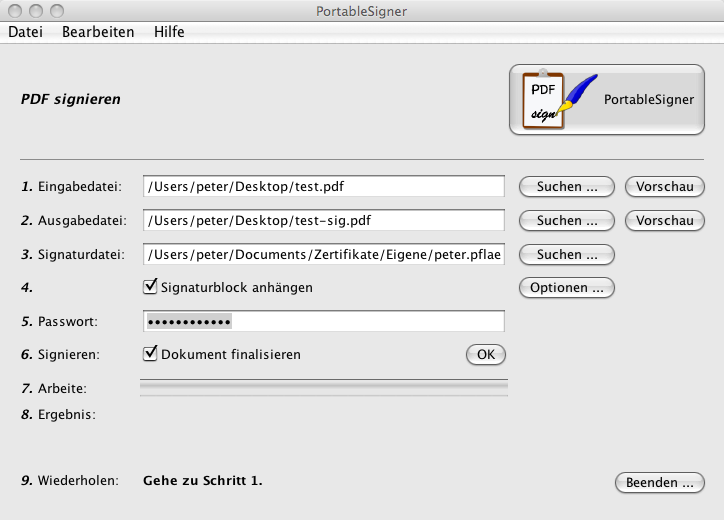
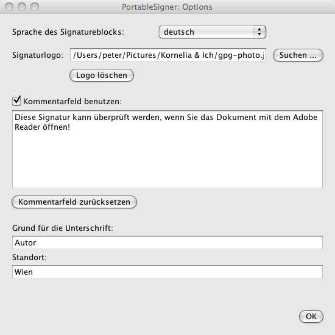
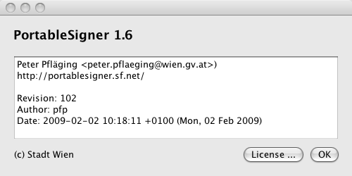

PortableSigner
PortableSignerNeue Version 1.8!
Sowohl auf OSOR.eu als auch auf Sourceforge.net ist der Download und der Sourcecode verfügbar.
Ab sofort wird der PortableSigner unter der EUPL weiter entwickelt!
Es
ist möglich geschützte PDF Dokumente zu signieren.
Derzeit
existiert diese Option allerdings nur auf der Kommandozeile.
PortableSigner hat die ersten Ansätze für eine saubere Installation unter Linux:
Es gibt einen Install Script (leider noch kein Paket)
Unter Linux muss Java installiert sein. Für Ubuntu ist das:
sun-java6-bin
sun-java6-jre
tzdata-java
Es gibt einen Shell commandline wrapper.
Es wird (zumindest unter Gnome) ein Menueintrag generiert
PortableSigner.jar ist als Library unter Java verwendbar (Vielen Dank an Denis Torresan)
PortableSigner ist ein Java Programm zum digitalen Signieren (mit X.509 Zertifikaten) von PDF Dateien. Es ist plattformunabhängig und läuft derzeit (zumindest) unter Windows (2000, XP, ...), Linux und Mac OS X.
Man kann PDF Dokumente mit X.509 Zertifikaten digital signieren, und dafür sorgen, das diese Dokumente nicht weiter verändert werden können, ohne dass das Dokument seine Signatur verliert. Damit erreicht man eine elektronische "Unterschrift" auf nahezu beliebigen Dokumenten. Dies entspricht wohl am ehesten dem Ansatz "Electronic Paper".
Einige Publikationen haben schon über den PortableSigner berichtet:
Unverwechselbare Dokumente erstellen mit dem PortableSigner (openPR.de - Verlag deutsche Wirtschaft)
Wie man signierte PDF Dateien mit PortableSigner aus JTL-Wabi erzeugt.
RubyPDFBlog erwähnt auch den PortableSigner, obwohl der nun wirklich nicht in Ruby implementiert wurde.
"Signieren von PDF-Dokumenten mit Portablesigner" von Florian Effenberg im Linux Magazin
Dieses Programm
Eine Java 1.5 oder 1.6 kompatible Laufzeitumgebung (siehe auch http://www.java.com)
Eine PKCS#12 Datei mit einem persönlichen Zertifikat (zum Beispiel von CAcert oder bei Thawte)
PDF Dateien (eh' klar, oder?)
PortableSigner kann in 2 unterschiedlichen Modi betrieben werden:
GUI Desktop Modus : Grafische Benutzeroberfläche für das interaktive Signieren von einzelnen Dokumenten
Commandline Modus : Betrieb des selben Programms über die Kommandozeile (für Batch oder Operatorlosen Betrieb)
Alternativ gibt es unter Windows einen eigenen Installer, der eine Programmgruppe und die entsprechenden Menüeinträge generiert.
Für Mac OS X gibt es ein "tar.gz" File welches das Programm als Mac OS X Bundle zur Verfügung stellt
Sollte wie oben schon erwähnt eine Java 1.5 Runtime installiert sein, so muss man nur die ZIP Datei (siehe Download) auspacken und doppelklicken oder in dem ausgepackten Verzeichnis via
java -jar PortableSigner.jar
starten.
Nun sieht man etwas ähnliches wie hier:

Die Bedienung dürfte auf Basis dieser Maske relativ klar sein:
Man selektiert eine Eingabedatei (die letzte Eingabedatei bleibt vorselektiert).
Man sucht sich eine Ausgabedatei (Standard ist der Eingabedateiname mit "-sig" angehängt).
Man selektiert die PKCS#12 Datei (später werden auch andere Typen von Dateiformaten unterstützt sein. Siehe ToDo)
Es lässt sich ein Signaturblock auf der letzten Seite des Dokumentes aufbringen.
Das Passwort der PKCS#12 Datei eingeben
Entscheiden, ob das Dokument finalisiert wird und den Button "Signieren" drücken
fertig!
Hat man den Haken "Signaturblock anhängen" betätigt,
so wird eine neue Seite an das Dokument angehängt, welche folgende
Signaturinformationen enthält:
Anbei noch der Bildschirm, welcher sich hinter den "Optionen..." verbirgt:

Weiterhin gibt es noch einen "Über ..." Dialog auf dem Hauptbildschirm. Dort erfährt man die aktuelle Version, welche man auch anmerken sollte, wenn man mit mir in Kontakt tritt:

Das Programm unterstützt auch den Aufruf über Commandline Parameter:
pfp$ java -jar PortableSigner.jar -h
usage: PortableSigner
-b <arg> Signaturblock anhaengen. Parameter:
[german|english|polish]
-c <arg> Kommentar unter dem Signaturblock (text)
-f Wenn diese Option gesetzt ist, wird das Dokument
NICHT finalisiert!
-h Hilfe (diese Seite)
-i <arg> Bild im Signaturblock
-l <arg> Inhalt des PDF "Ort" - Feldes (Text)
-n Ohne GUI
-o <arg> Ausgabedatei (PDF)
-ownerpwd <arg> Passwort fuer Restriktionen
-ownerpwdfile <arg> Passwort Datei fuer Restriktionen
-p <arg> Signaturpasswort
-pwdfile <arg> Passwort Datei
-r <arg> Inhalt des PDF "Grund" - Feldes (Text)
-s <arg> Signaturdatei (P12 oder PFX)
-t <arg> Eingabedatei (PDF)
pfp$Um das Beispiel von oben noch einmal als Kommandozeile auszuführen, wäre also folgende Kommandozeile notwendig:
pfp$ java -jar PortableSigner.jar -n \
-t /Users/pfp/Desktop/unsigned.pdf \
-o /Users/pfp/Desktop/signed.pdf \
-s /Users/pfp/Desktop/pfp.p12 \
-p MeinGeheimesPasswort
Das Dokument
/Users/pfp/Desktop/signed.pdf
wurde erzeugt und signiert!
pfp$Um auch den Aufruf aus Macros zu unterstützen schaltet nur der Schalter "-n" die GUI Komponente des Programms komplett aus!
Das Dokument muss nicht finalisiert werden. Auf diese Weise können mehrere Zertifikate aufgebracht werden. Nur der Letzte finalisiert.
Die Methode wie die lokalisierten Signaturblöcke angegeben werden wurde geändert. Damit ist eine Lokalisierung leichter möglich (siehe auch Translation.txt).
Es gibt die Möglichkeit einfach einen "Intranet" Build zu machen, um das Tool lokal verteilen zu können (siehe auch HowTo-InternalUse.txt).
Der Signaturblock wurde den österreichischen Vorgaben für die Amtssignatur angepasst
Peter Pfläging <peter@pflaeging.net>
Vielen Dank an die Unterstützer mit Ideen, Lokalisierungen und Patches, ...